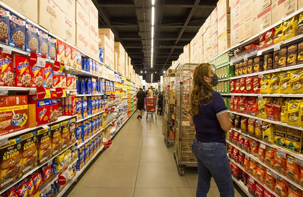

Inflação persiste na casa dos dois dígitos, mas desacelera em maio
09/06/2022 09h18 - Atualizado 09/06/2022 09h18
A inflação vem tirando o sono e o humor do brasileiro, e é tema de conversas que vão da fila do caixa no supermercado aos gabinetes de campanhas dos presidenciáveis em Brasília. Pudera! Em doze meses, o índice de preços acumula 11,73%, segundo dados do IBGE divulgados nesta quinta-feira, 9, assim chegando ao nono mês seguido de inflação acumulada acima de dois dígitos. Em maio, no entanto, o índice apresentou desaceleração, ficando em 0,47% contra o 1,06% registrado em abril.
Essa desaceleração ocorre porque, no mês, os preços de alimentos e de combustíveis, que vêm sacrificando o orçamento das famílias, subiram em ritmo mais lento. O setor de alimentos e bebidas registrou 0,48%, frente a alta de 2,06% em abril. O resultado, segundo o IBGE, é explicado porque produtos que vinham subindo bastante tiveram quedas expressivas em maio, a exemplo do tomate (-23,72%), da cenoura (-24,07%) e da batata-inglesa (-3,94%), muito pelo fator sazonal.
“Agora começamos o período de outono-inverno que é mais seco e permite aumentar a oferta de alimentos e reduzir os preços. Outro fator é que os preços de alguns alimentos, como a cenoura (116,37% em doze meses), subiram muito, o que faz com que a base de comparação seja muito alta. Já o preço do leite continua subindo, devido ao período de entressafra — com pastagens mais secas — e à inflação de custos com a elevação dos preços de commodities como milho e soja, usadas na ração animal”, esclarece o gerente do IPCA, Pedro Kislanov.
No caso dos combustíveis, a desaceleração é explicada porque, após altas expressivas nos preços das refinarias em março, os preços foram repassados para o consumidor final em março e em abril. O subgrupo variou 1%, recuando em relação aos 3,2% do mês anterior. “Houve, inclusive, queda no preço do etanol (-0,43%), após uma alta de 8,44% em abril”, explica Kislanov. Apesar da desaceleração dos combustíveis em geral, o óleo diesel teve uma alta de mais de 3%, muito ligada ao aumento que o combustível passou em maio na refinaria. “Só que o produto tem um peso pequeno no IPCA, impactando mais transportes pesados como caminhões e ônibus”, destaca Kislanov.
A desaceleração não significa queda nos preços medidos pelo IPCA, mas sim um ritmo mais lento de alta. Tanto que, dos nove grupos medidos pelo IPCA, oito tiveram variação positiva.
O grupo vestuário subiu 2,11%, a maior variação. Os transportes, onde os combustíveis estão inseridos, registraram alta de 1,34% — embora o preço do combustível tenha desacelerado, as passagens aéreas subiram. A variação do grupo saúde e cuidados pessoais (1,01%) passou pela elevação nos medicamentos. Também registraram variação positiva o grupo de artigos para residência (0,66%), despesas pessoais (0,54%), comunicação (0,72%) e educação (0,04%).
O único grupo a apresentar queda foi habitação (-1,70%), contribuindo com um impacto de -0,26 ponto porcentual no índice do mês. A queda se deve à redução nas contas de energia, pelo segundo mês seguido, em função de mudança de bandeira tarifária. Em 16 de abril, cessou a cobrança extra de 14,20 reais a cada 100 kWh consumido, relativa à bandeira Escassez Hídrica, passando a vigorar a bandeira verde, em que não há cobrança adicional na conta de luz. As variações de energia elétrica nas áreas foram desde -13,49% em Brasília — onde houve redução de PIS/Cofins — até 6,97% em Fortaleza, por causa do reajuste de 24,23% nas tarifas residenciais, aplicado a partir de 22 de abril.